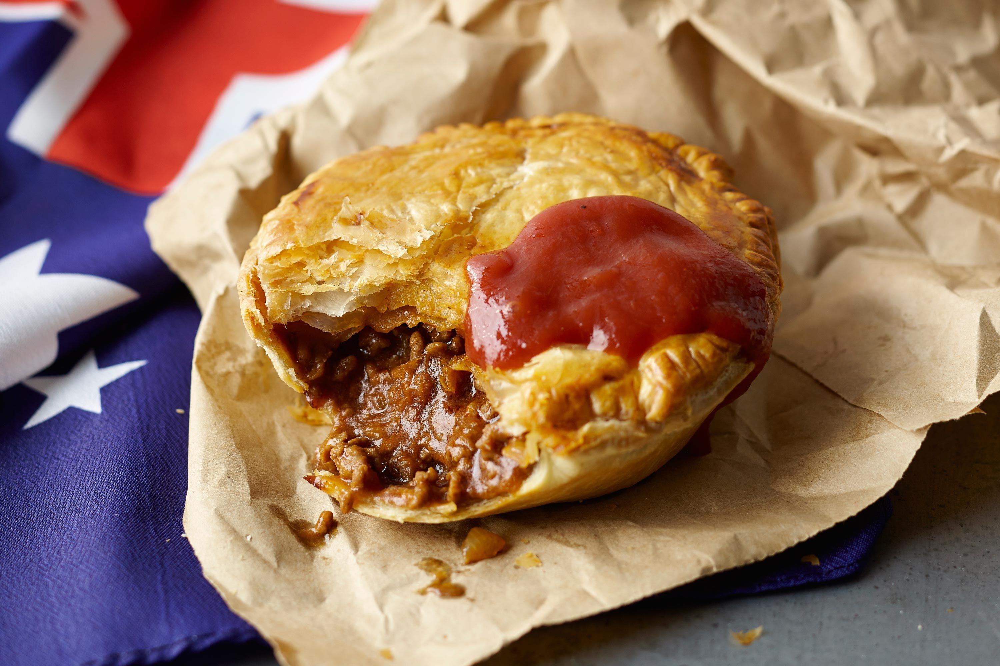
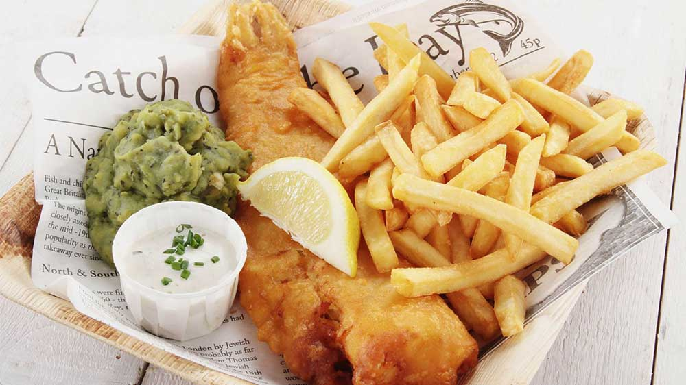
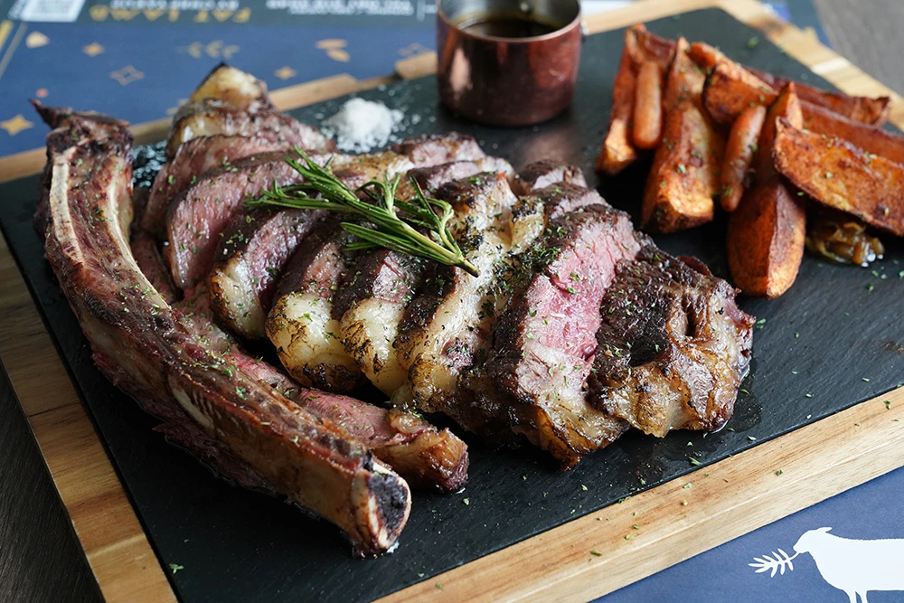

Aussie Meat Pie
- หั่นเนื้อ หัวหอม แครอท ให้เป็นหั่นสี่เหลี่ยมลูกเต๋าและเห็ดแชมปิญองสดหั่นบาง พักไว้
- ใส่น้ำมันมะกอกและหัวหอมลงกระทะผัดสักครู่ เพิ่มเนื้อลงผัดให้สุกใส่ไวน์แดงพอแอลกอฮอล์ละเหย จึงเปลี่ยนใส่่หม้อ เพิ่มน้ำสต๊อกเนื้แครอท เห็ดลงในหม้อ ตั้งไฟเคี่ยวจนน้ำลดลงครึ่งหม้อ ใส่น้ำส้มสายชูไซเดอร์ ซอสวูสเตอร์ ซอสมะเขือเทศ น้ำตาล แป้งข้าวโพดตั้งไฟเคี่ยวต่อจนส่วนผสมข้น ยกลงพักไว้ให้เย็น
- รีดพายแล้วตัดลงพิมพ์ขนม ตักส่วนผสมใส่ลงในพิมพ์และตัดพายปิดบนให้สนิด ทาไข่ เจาะรูบนฝาพายแล้วเข้าอบ 200 องศา 30 นาที

Fish & Chips
- ตีใข่ไก่ 2 ฟอง สำหรับชุบเนื้อปลา
- นำปลาชุบกับแป้งทอดกรอบแล้วนำมาคลุกกับไข่ไก่แล้วชุบเกล็ดขนมปัง พักไว้
- ตั้งไฟแรงพอน้ำมันร้อนรี่แก๊สลงปานกลางแล้วนำปลาที่ชุบไว้นำมาทอดให้เหลืองกรอบ
- นำเฟรนด์ฟราย มาทอดไฟแรง น้ำมันท่วม ดูให้เหลืองกรอบ หมั่นคนให้ทั่ว พอได้ที่แล้วสะเด็ดน้ำมัน นำเกลือมาคลุกเคล้าให้เข้ากัน
- นำปลาที่ทอดไว้มาจัดจานกับเฟรนด์ฟรายพร้อมผักเครื่องเคียง และมะนาวที่ฝานไว้เอาไว้บีบใส่ปลาตอนทาน
- ส่วนน้ำจิ้มทำเอง โดยนำเอาซ๊อสมะเขือเทศ, ซ๊อสพริก, มองยองเนสและโชยุญี่ปุ่นมาผสมกัน หรือชอบแบบไหนตามใจเลย

Australian Beef Steak
- นำเนื้อใบพายออกจากตู้เย็นพักไว้ในอุณหภูมิห้องก่อนเริ่มปรุง 30 นาที
- ปรุงรสเนื้อสเต็กตามชอบ ปรุงรสด้วยเกลือหยาบ พริกไทยป่นบด และน้ำมันมะกอก
- อุ่นกระทะหรือเตาบาร์บีคิวให้ร้อน หากต้องการความสุกระดับ medium-rare ให้ย่างเนื้อแต่ละด้านนาน 21/2 นาที
- หลังจากนั้นเติมไธม์เพื่อให้กลิ่นหอมและรสชาติแบบอ่อน ๆ นำสเต็กขึ้นมาพัก 4 นาทีก่อนเสิร์ฟ
- หากชอบระดับความสุก medium-well ให้ย่างแต่ละด้านนานขึ้น 31/2 นาทีและพักสเต็ก 5 นาทีก่อนเสิร์ฟ เสิร์ฟกับกระเทียมย่าง